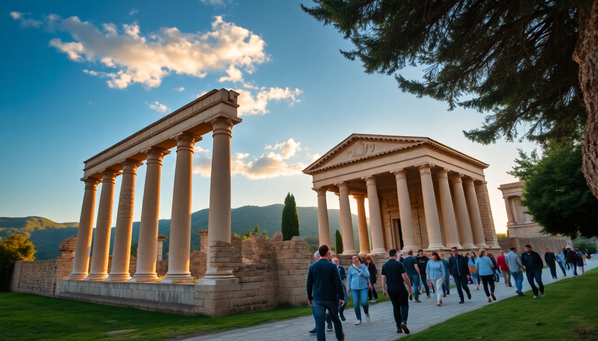

Best Day Trips from Rome: Tivoli, Ostia Antica & More

I’ve lived in Rome for three years, and I still get a kick out of hopping a train and being somewhere completely different in under an hour. The city is a base camp for some of Italy’s best day trips—ancient ruins by the sea, Renaissance villas in the hills, and a port town that’s more than just a cruise terminal. Here’s what I actually did, what I’d skip, and how to pull it off without wasting time.
Why visit Tivoli instead of another Roman ruin?
Tivoli is a 40-minute train ride from Roma Termini, and it gives you two UNESCO sites in one afternoon. Villa d’Este is the main draw—a 16th-century villa with a garden built around fountains that make Versailles look understated. I spent two hours just watching the Organ Fountain cycle through its water-powered music. It’s loud, ridiculous, and brilliant.
Villa Adriana, Emperor Hadrian’s sprawling retreat, is a 15-minute bus ride from the Tivoli town center. It’s less polished than Villa d’Este but far more atmospheric. You walk through broken marble halls and imagine Hadrian sailing his artificial canal.
- Villa d’Este – Book a timed slot online. The garden closes earlier than the villa (around 4:30 PM in winter).
- Villa Adriana – Buy the combo ticket if you plan to see both. It’s cheaper, and valid for 24 hours.
- Lunch at Ristorante Sibilla – Right next to Villa d’Este’s entrance. Their cacio e pepe with truffle is worth the €18.
- Getting there – Take the Trenitalia regional train from Roma Termini to Tivoli (€3.60, runs hourly). Then local bus to Villa Adriana.
Is Ostia Antica better than Pompeii?
I’ll say it: Ostia Antica is the better day trip if you’re based in Rome. Pompeii is epic, but it’s a full-day commitment (2.5 hours each way by train). Ostia Antica is 30 minutes from Rome’s Ostiense station, and it’s just as well-preserved. You can walk down the same Roman streets, see intact mosaics, and stand in a real thermopolium (ancient fast-food joint) without the Pompeii crowds.
I went on a Tuesday in October and had entire blocks to myself. The site is huge—plan for at least three hours. The on-site museum has a beautiful marble statue of Mithras slaying a bull, pulled from the local Mithraeum.
- Train – Roma Porta San Pietro or Roma Ostiense to Ostia Antica. Line FL1, every 15 minutes. €2.50.
- Entry – €18 for adults. No need to pre-book unless it’s peak season (August).
- Lunch at Ristorante Monumento – A 5-minute walk from the exit. Their spaghetti alle vongole is solid, and the house wine is drinkable.
- Pro tip – Bring water. There’s a single café inside, and it’s overpriced.
What’s the point of a day trip to Civitavecchia?
Most people only see Civitavecchia as the cruise port. But the town itself has a working fishing harbor, a decent beach, and the best fritto misto I’ve had outside Sicily. If you’ve already done Ostia and Tivoli, this is a low-effort escape from Rome’s chaos.
The main attraction is the Forte Michelangelo, a 16th-century fortress built to defend the Papal States. It’s free to walk around the outside, and the views of the Tyrrhenian Sea are better than any rooftop bar in Rome. The beach (Pirgo) is a 15-minute walk from the port—rocky, but swimmable in summer.
- Train – Roma Termini to Civitavecchia. Regional trains take 1 hour (€8), Frecciargento takes 40 minutes (€14).
- Lunch at La Barcaccia – On the harbor. Their frittura di paranza (mixed fried fish) is €12 and comes with a lemon wedge and a cold beer.
- Forte Michelangelo – Free to explore the exterior. The interior is closed to the public.
- Skip – The archaeological museum unless you’re a hardcore Roman history buff. It’s small and dusty.
How do I get to these day trips from Rome?
Trains are your best bet for all three. Rome’s main stations are Termini, Ostiense, and Tiburtina. For Tivoli, you want Termini. For Ostia Antica, Ostiense or Porta San Pietro. For Civitavecchia, Termini.
- Trenitalia regional trains – Cheap (€2.50–€8), no reservation needed. Just tap your credit card at the gate.
- Italo – Only for Civitavecchia. Faster, but you need to book a seat.
- Buses – Don’t bother. Traffic out of Rome is brutal, and the train station in Tivoli is a 5-minute walk from the town center.
- Car rental – I wouldn’t. Parking in Tivoli is a nightmare, and Ostia Antica has no free parking near the entrance.
Where should I stay in Rome to make these trips easy?
I always recommend the Termini or Castro Pretorio neighborhoods. They’re not the prettiest parts of Rome, but you can walk to the train station in under 10 minutes. That saves you an extra metro ride when your train leaves at 8:00 AM.
- Hotel Artemide – On Via Nazionale, a 15-minute walk from Termini. The rooftop bar has a view of the Altare della Patria, and breakfast includes fresh pastries from a local bakery.
- B&B Le Muse – Small, family-run, a 5-minute walk from Termini. €80/night. No frills, but clean and quiet.
- The Hive Hotel – Near Castro Pretorio. Good for solo travelers. They have a shared kitchen and a rooftop terrace.
What should I eat on these day trips?
Each destination has a signature dish that’s worth planning around. In Tivoli, it’s cacio e pepe with truffle. In Ostia Antica, it’s spaghetti alle vongole at Ristorante Monumento. In Civitavecchia, it’s anything fried from the harbor.
- Tivoli – Pizzeria La Botte for a quick, cheap slice. Their pizza bianca with rosemary is €2.
- Ostia Antica – Gelateria Artigianale Il Pinguino near the train station. The pistachio is dangerously good.
- Civitavecchia – La Barcaccia for fish. Pasticceria De Luca for a sfogliatella and espresso before the return train.
FAQ
Can I do Tivoli and Ostia Antica in the same day? Technically yes, but I wouldn’t. You’ll spend more time on trains than at the sites. Do Tivoli one day, Ostia the next. If you only have one free day, pick Ostia Antica—it’s closer, cheaper, and less crowded.
Do I need to book tickets in advance for these day trips? For Villa d’Este, yes—book online at least 24 hours ahead. For Ostia Antica, no, unless it’s August or a holiday weekend. For Civitavecchia, the fortress is free, so no booking needed.
Is Civitavecchia worth it if I’m not catching a cruise? Yes, if you want a low-stakes day by the water. The fish is excellent, the fortress is free, and the train ride is short. But if you’re comparing it to Tivoli or Ostia, those are better first choices.
Conclusion
- Tivoli wins for history and sheer spectacle—Villa d’Este’s fountains are unlike anything else in Italy.
- Ostia Antica is the best value day trip: cheap, fast, and you get a full Roman city without the Pompeii crowds.
- Civitavecchia is a backup option for a lazy day with good seafood.
- Stay near Termini to maximize your morning train window.
- Eat local, skip the tourist menus, and always carry cash for small cafes.